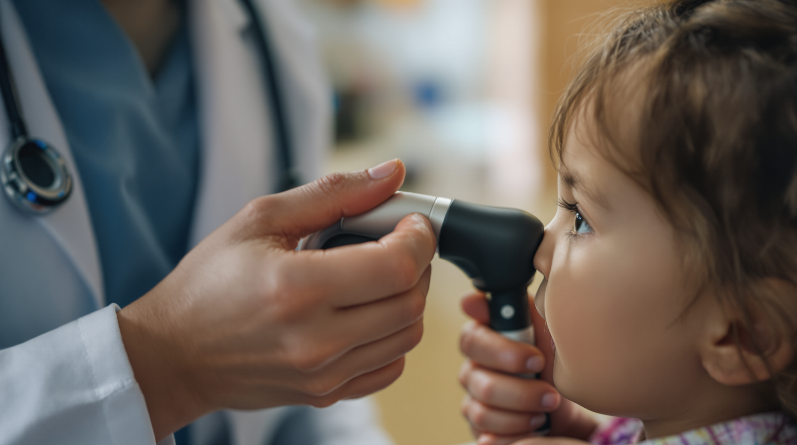

The number-one reason people in Pharr end up in the ER for something that wasn't an emergency: they didn't have insurance and they didn't know there was another option. That's the problem. The ER bills four figures for a strep test. The Minute Clinic at the chain pharmacy is closed by the time most people get off shift. And every other "urgent care" in town wants to swipe an insurance card before the receptionist even asks what's wrong. When folks search for a real no insurance urgent care pharr answer, they're looking for a clinic that simply tells them the price upfront and gets them seen tonight. That's the one we built.
Why Pharr Patients Pick Cash-Pay Over The ER
The ER is built for true emergencies — heart attacks, strokes, broken bones. It's the most expensive way to handle a sore throat, an ear infection, a sprain, a fever that won't break. A cash-pay clinic visit costs less than the parking garage at the ER, and the wait is measured in minutes, not hours. If it's not a true emergency, this is the math that actually saves your week.
"The patient with no insurance still deserves to know the price before walking in. That's the whole reason we run a cash-pay clinic." — Optimum Care Clinic · Pharr
What The $75 Sick Visit Actually Covers
A real exam, with a real provider, for the most-common reasons people walk in.
Cold, Flu, Sore Throat
Strep check, symptom workup, rest plan, prescription if needed. The most common walk-in reason on the south side, and the cleanest fit for a $75 visit.
Sinus, Ear, And Cough
Real ear and sinus exam, antibiotic if appropriate, no padded follow-ups. The kind of thing that slowly gets worse if you keep waiting it out.
Skin, Rash, Mild Injuries
Quick eval and treatment plan for most non-emergency skin issues, rashes, and minor cuts or sprains. Not a true emergency — perfect cash-pay clinic case.

Healthcare Without Insurance Shouldn't Mean Healthcare Without A Price.
The single biggest reason people in Pharr put off care is the unknown bill. The ER won't tell you the price. The chain urgent care won't tell you the price. The hospital outpatient clinic won't tell you the price. Then the bill arrives a month later and ruins the budget for the rest of the year.
A real cash-pay clinic flips that on its head. The price is the price. $75 covers the sick visit, you walk in, you walk out, and there's no bill chasing you across the holidays. That's not a marketing pitch — it's how healthcare is supposed to work for the patient who's paying out of pocket.
Insider Tips From The Pharr Front Desk
Six things our nurses tell every walk-in patient on their first visit.
- Come right after work, not at peak. The 6–8pm window is the busiest. If your symptoms can wait an hour, the 8:30pm window is the easiest in-and-out.
- Bring a list of meds you already take. Even an old phone screenshot. Speeds up the visit and avoids drug-interaction questions.
- Tell the provider what you've already tried. Tylenol, ibuprofen, cough syrup, sleep — all of that changes the recommended next step.
- Don't tough it out for a week. A $75 visit on day three is cheaper than a $400 ER trip on day five when it gets worse. We see this every winter.
- Ask about prescription cost. If a script is needed, the cheapest pharmacy in Pharr is usually a different one than the closest pharmacy. We'll point you to the lower-cost option without being asked.
- Save the receipt for taxes. Cash-pay medical receipts can sometimes be deducted on a Schedule A. Worth asking a tax preparer in February.
Real Clinic. Real Provider. Real Pharr.
Optimum Care Clinic was built for the patient who doesn't fit the chain-clinic mold — no insurance, working a shift, needing care after the kids are in bed. We're staffed by licensed clinical providers, bilingual, and run with the operational discipline of a primary-care office, not the chaos of an ER.
The pricing is honest, the schedule is built around when working Pharr families actually have time to be seen, and the front desk knows your face by visit two. That's what cash-pay healthcare in Pharr is supposed to look like.

"The patient who walks in tonight without insurance shouldn't get treated like an inconvenience. They get treated like a neighbor." — Optimum Care Clinic · Cash-Pay Promise
Why Pharr Trusts Optimum Care Clinic
Local. Cash-pay. Bilingual. Built for the south side. The best no insurance urgent care pharr isn't the ER and it isn't a national chain — it's the clinic that publishes the $75 sick visit price upfront and stays open after work. Walk in tonight. No appointment. No surprise bill.
Walk In Tonight — $75 Sick Visit
No insurance card. No coverage paperwork. Bilingual provider, evenings and weekends. Just bring a photo ID.
Visit Optimum Clinic